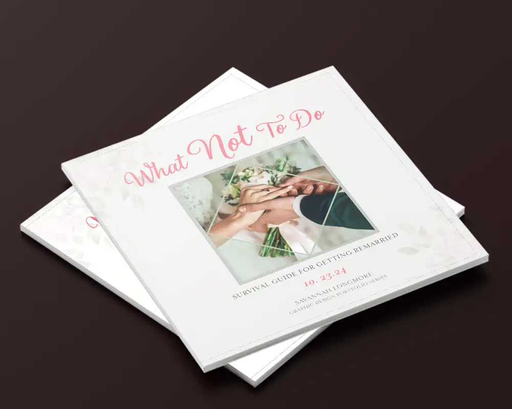
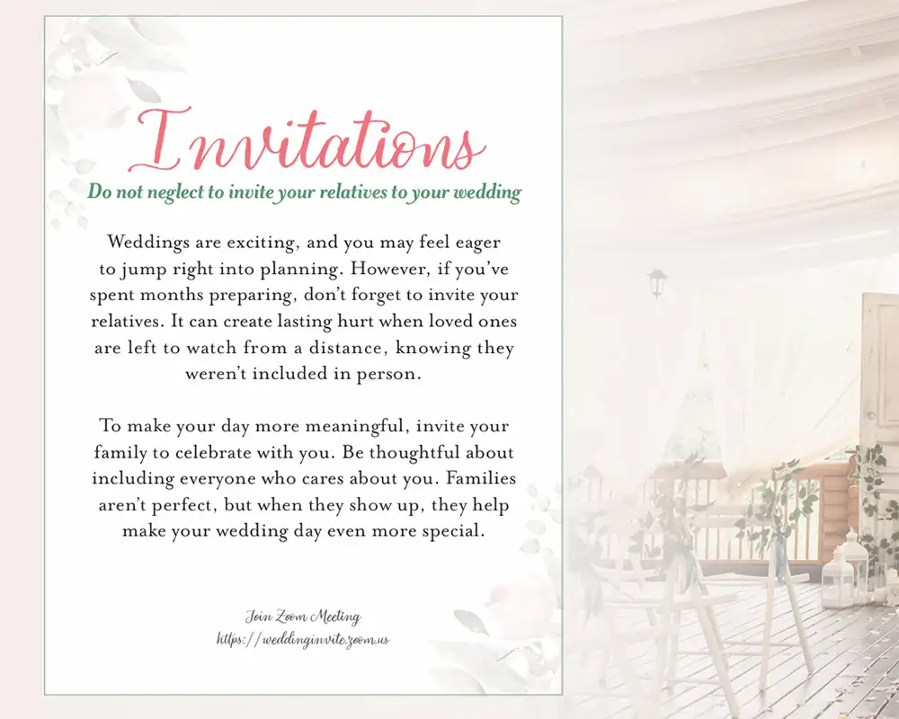
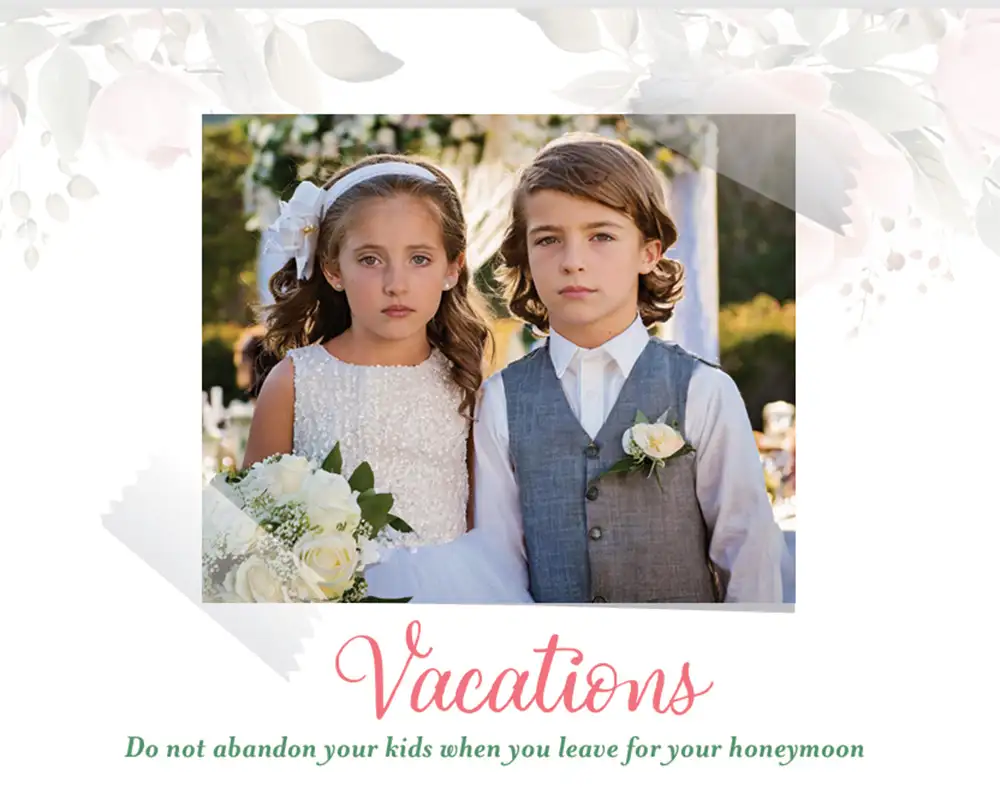
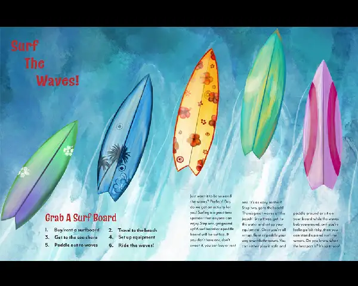
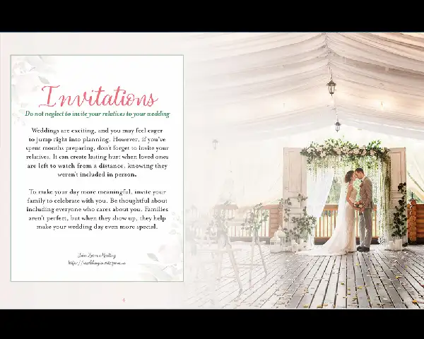

Cover Design
Introduces the romantic wedding-album aesthetic while hinting at the advice-based theme.

Overview
This booklet began as a class assignment to design a publication that guides readers through a concept. After the course ended, I revisited the project and redesigned it from the ground up with a topic that felt more personal and meaningful.
The result is a wedding-album inspired advice booklet that explores the emotional and practical challenges of remarriage, especially when children and blended families are involved.
My Role
Graphic Designer & Author
Tools
InDesign, Illustrator, Photoshop
Format
8.5 × 11 saddle-stitched booklet
Length
20–24 pages
The Challenge
Remarriage is often portrayed as purely romantic, but it can also introduce emotional challenges for children and blended families. The design challenge was to communicate thoughtful advice about these situations without making the content feel harsh, judgmental, or overly serious.
The goal was to create a booklet that felt visually consistent with a wedding album while also encouraging readers to slow down and consider the real responsibilities that come with remarriage.
Audience
This booklet is aimed at couples who are deeply in love and eager to remarry quickly. While excitement is natural, the publication encourages readers to think carefully about the emotional dynamics that can arise when families are blended.
Through humor and storytelling, the booklet gently reminds readers to consider how remarriage affects children and family relationships.
Concept & Tone
The visual direction was inspired by traditional wedding albums. Soft romantic colors, floral imagery, and elegant typography create a warm and inviting atmosphere. Within that familiar aesthetic, the content offers practical advice presented with empathy and subtle humor.
The goal was to balance seriousness with lightness so the booklet felt helpful rather than preachy. Humor softens difficult topics and keeps readers curious about the next spread.
Design System
- Two-column grid system to maintain structure and readability
- Script display headings paired with readable body typography
- Soft wedding-inspired color palette based on real wedding albums
- Alternating page colors to create visual rhythm
- Graphic tape elements to mimic scrapbook wedding photos
Typography hierarchy was established using size, color, and font pairing so readers could quickly identify section titles even when flipping through the booklet.

Narrative Structure
Rather than presenting isolated advice sections, the booklet follows a subtle narrative progression across its spreads.
- Beginning: Families meeting before the wedding
- Middle: The wedding ceremony itself
- End: The honeymoon and life after the event
This structure creates a visual and emotional journey that guides readers through the stages of remarriage.
Featured Spread
The center spread acts as the visual centerpiece of the booklet. A romantic image stretches across both pages, creating a pause in the pacing before the reader moves into the next set of advice and reflection.

Selected Spreads
Visual Details
Alongside the overall layout, small details helped support the wedding-album concept. Scrapbook tape, soft framing, elegant typography, and alternating spread treatments gave the booklet personality while keeping the design cohesive.

Process & Iteration
The first version of this project explored a beach theme with illustrated spreads. Although the concept was playful, it lacked professional layout structure and strong typography hierarchy.
After gaining more experience with editorial design principles, I redesigned the project entirely. The new version focuses on stronger typography, improved pacing, better imagery, and a more cohesive narrative structure.
Revisiting the project allowed me to apply the design skills I had learned since the original assignment and elevate the overall quality of the work.
Early Concept
Before redesigning the project, my first booklet explored a playful beach theme. While the idea was energetic and imaginative, it did not yet have the hierarchy, pacing, and editorial polish I wanted my work to communicate.
Comparing the early version with the final wedding booklet shows how much my understanding of typography, image selection, layout systems, and narrative design developed over time.
Before

Playful and energetic layout
The beach booklet uses bright color, illustration, and motion-inspired layout choices to create a fun and active visual tone.
After

Soft and elegant composition
The wedding booklet uses soft imagery, delicate typography, and spacious composition to support a more romantic and refined mood.
What This Project Shows
Editorial Thinking
I can organize content into a paced reading experience rather than a collection of disconnected pages.
Typography & Hierarchy
I use font pairing, scale, spacing, and layout to guide readers through information clearly.
Concept Development
I can build a visual system around a message and keep the tone consistent across an entire piece.
Iteration & Growth
I am willing to revisit older work, improve it, and push it to a more professional level.
Reflection
This project reinforced that strong design requires more than attractive visuals. Effective editorial design depends on thoughtful hierarchy, pacing, imagery, and storytelling working together to communicate an idea.
If I continued refining this piece, I would print additional test copies to evaluate gutter spacing, color accuracy, and bleed alignment to ensure the booklet performs well in physical production.